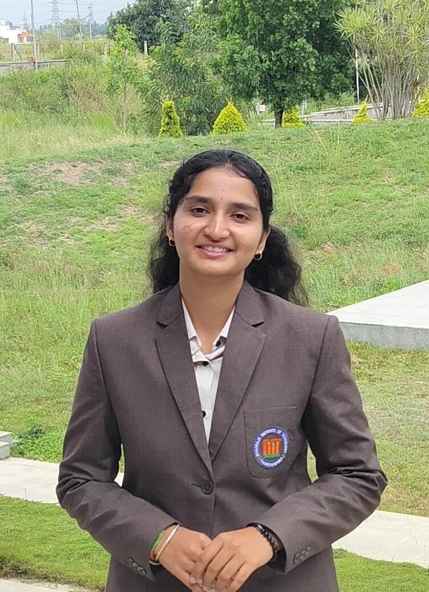

AI Enthusiast & Web Developer
I'm an aspiring AI Engineer with a strong interest in machine learning, deep learning, and real-world AI applications. Alongside my AI journey, I also enjoy building responsive and user-centric web applications. I'm constantly learning, experimenting, and expanding my skills in both AI and web development.
I am highly interested in Artificial Intelligence, Machine Learning, and exploring how AI can be applied to solve real-world challenges. I also enjoy working on web development projects, especially those that focus on interactive and user-friendly design.
I love learning new technologies, experimenting with innovative ideas, and continuously improving my problem-solving skills. I am also interested in participating in hackathons, workshops, and ideation events that encourage innovation and teamwork.
Beyond academics, I enjoy exploring emerging tech trends, building small AI/ML projects, and staying updated with the latest advancements in technology. I believe in lifelong learning and constantly pushing myself toward growth and creativity.
SilkConnect is a digital platform built to connect Karnataka's silk weaving community with customers through a seamless online marketplace. It simplifies artisan registration, product discovery, secure communication, and order management while preserving the rich heritage of handwoven silk. Developed with modern web technologies, the platform focus
A web-based intelligent crop recommendation system that predicts the most suitable crop based on soil nutrients (Nitrogen, Phosphorus, Potassium), temperature, humidity, pH, and rainfall. The application is built with Python, Flask, HTML, CSS, Bootstrap, and Scikit-learn, providing farmers and agricultural enthusiasts with data-driven crop recommendations through an easy-to-use interface.
Enabling the creation of new text that mimics the style of an input dataset. Built a statistical model to predict the probability of a word or character based on previous ones, allowing for coherent and stylistically consistent text generation.
Worked on AI-based projects and learned the fundamentals of machine learning models. Gained hands-on experience in data preprocessing, AI model building, and deployment basics.
Contributed to AI projects including text generation and face recognition. Improved problem-solving skills through real-world AI applications and project work.
Secured Second Place in the AI Hackathon 2025 organized by CADD Centre, where our team developed an ML-based solution under strict time constraints, demonstrating innovation, teamwork, and problem-solving skills.
Secured Second Place in the Poster Presentation event at the AI Symposium 2025 for the topic “AI for Sustainable Cities”, organized by the Department of AI & Data Science, Maharaja Institute of Technology, Thandavapura.
Successfully completed theGoogle Cloud Career Launchpad – Cloud Engineer Track, gaining hands-on experience in cloud computing, deployment, networking, and Google Cloud Platform services.
Successfully completed NPTEL certification course in Machine Learning for Engineering & Science Applications (Elite Score),strengthening machine learning fundamentals.
Earned certification inData Structures in Python through Google (Coursera), gaining hands-on programming experience with algorithms, data structures, and problem-solving.
Successfully completed the “Artificial Intelligence for All” program organized by IUCEE, consisting of 6 webinars and hands-on assignments (June–August 2025) under the guidance of Dr. Rao Vemuri (University of California, Davis - Retd).
Selected as theClass Representative (CR) for the academic year 2025-26, coordinating academic activities and serving as a communication bridge between students and faculty.
Participated in the SIGMA IDEATHON – Idea Pitching Contest organized offline by the E-CELL, MIT Thandavapura, under mentorship of IIT Bombay (National Entrepreneurship Challenge 2025).
Completed the DBMS course offered by NPTEL & IIT Kharagpur under the Swayam initiative, including assignments and a proctored exam.
Successfully completed Python 3.4.3 Training with a score of 95% through the Spoken Tutorial Initiative by IIT Bombay, EduPyramids, and MIT Thandavapura.
Developed strongPublic Speaking, Presentation, Teamwork, Leadership, and Collaborationskills through technical events, project presentations, and team-based competitions.
Participated in multiple technical workshops and webinars, including: Data Analysis – Innomatics Research Labs, AI/ML for Geodata Analysis – ISRO, React with Django – Hands-on Development Workshop
Interested in working together? Let's talk about your project!